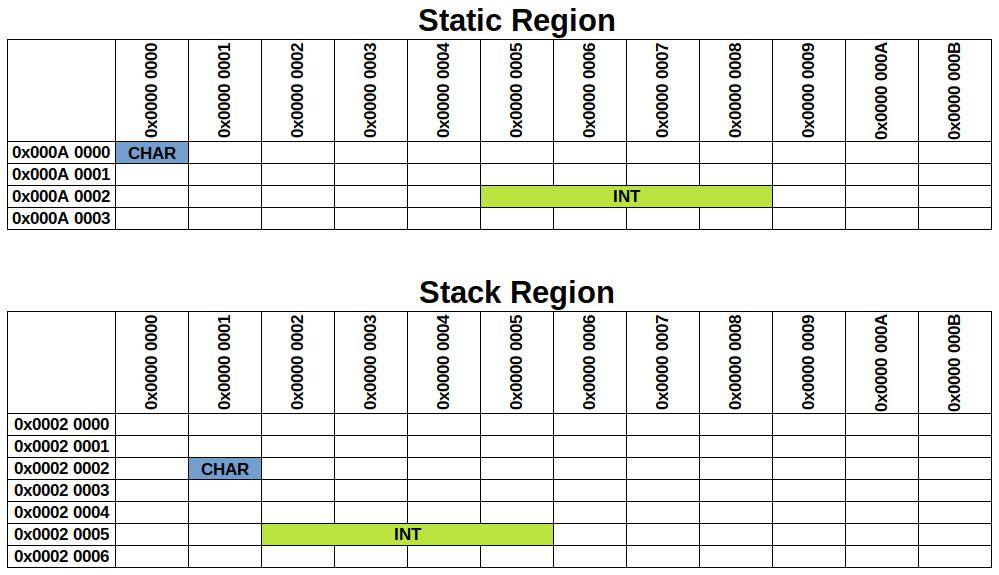
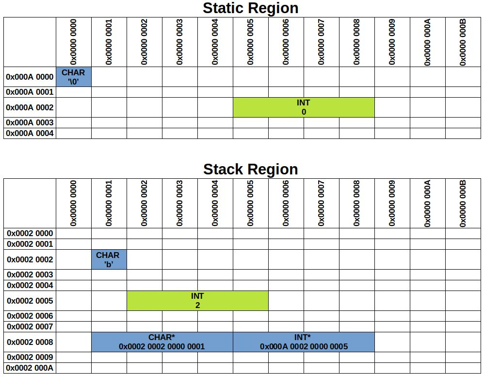
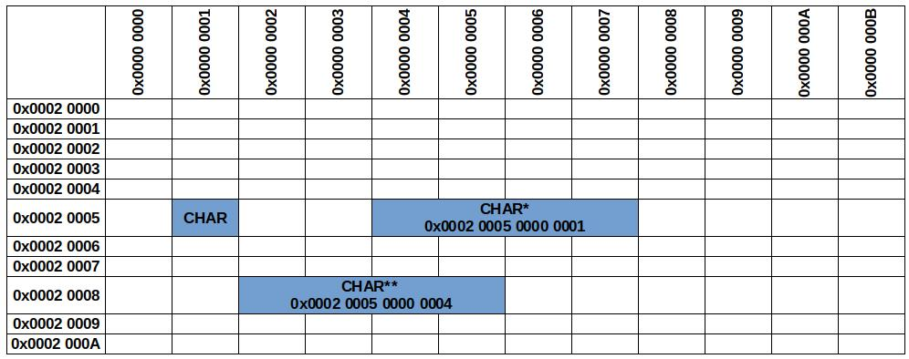
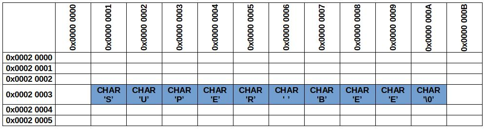
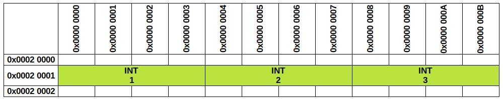
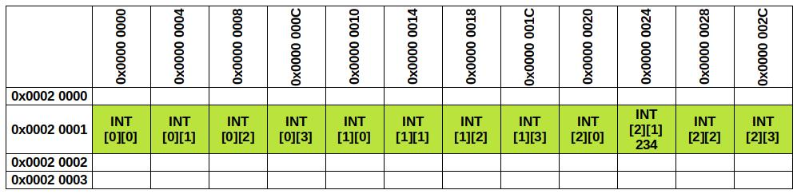
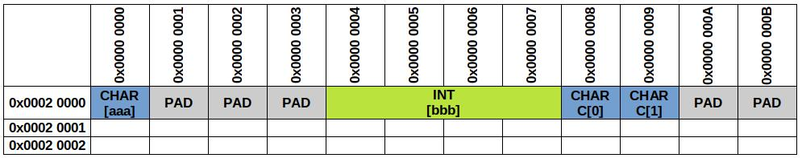

Pointer madness
At the beginning of the journey with C programming language, many students struggling to image what a pointer is and how to use it. Often this is the point when beginners formulate the statement:
C pointers are madness – this is too hard to understand!
Later, when they are told to use pointers at exams, or during exercises instead of standard arrays, they are placing stars all over the place and hope for the best.
I recon, that such problems comes from not understanding fully, what simple variable is and how it translates to physical world. When software is written in C, it usually means low level device management, therefore (in my opinion) it is impossible to write good C programs without understanding what the hardware will do after executing one program line.
ABC of basic pointer usage
Before we go into explaining, how the pointers reflects the physical memory operations, we should revise how to use them in code semantics.
Pointers declarations
To store a variable’s address, we declare a pointer by using start operator *. We gave the information, this variable is not going to store the real value, but rather the memory address, where the real value lives. After this, we need to specify, what kind of value is stored at the pointing address int, char etc. Then the compiler will know how to interpret the value that the pointer is pointing at.
/* Assign address when initializng the variable */
int* my_int_ptr = /*Here put the address*/;
char* my_char_ptr = /*Here put the address*/;
/* Assign the address later in code */
my_int_ptr = /*Here put the address*/;
my_char_ptr = /*Here put the address*/;
Accessing the address
Now we know, how to decelerate the pointer, but how to get the actual address of the variable? We should use the ampersand operator &. This operator is going to return the memory address that the value is stored (value lives).
int a;
printf("%p", &a); // This will display an address in e.g. 0x7ffc924fb7c4
Storing pointers
Combining the two information, we can finally decelerate valid pointer to variables.
/* Some dummy variables */
int int_variable;
char char_variable;
/* Assign address when initializng the variable */
// In e.g. (&int_variable) will turn into value 0x7ffc924fb7c4 etc.
int* my_int_ptr = &int_variable;
char* my_char_ptr = &char_variable;
/* Assign the address later in code */
my_int_ptr = &other_int_variable;
my_char_ptr = &other_char_variable;
Accessing pointers
The pointers are finally correctly stored, we can start to operate on their values that they are pointing to. To instruct the C compiler to not modify the address value, but rather the VALUE stored at the address, we are using the star * operator once again. The operation of accessing value, from address that the pointer is pointing to, is called dereferencing.
char foo = 'a';
char bar = 'z';
char* my_char_ptr = &foo; // Now we are pointing to `foo` variable
// Modify the content that the pointer is poining to
(*foo) = 'b'; // Now `foo` contain letter `b`
// Modify the address that the pointer is pointing to
my_char_ptr = &bar; // Now we are pointing to `bar` variable
// Modify the content that the pointer is poining to
(*foo) = 'x'; // Now `bar` contain letter `x` (dereferencion)
// Go check out this with printf :)
This is the right moment to ask yourself – what will happen, when not valid memory address pointer is going to be dereferenced? Two things can happen, the program will read garbage or will crash. Simple as it is and scary in its primitive.
Simple memory layout
It is time to move the theory into the practical world, to finally understand what there is happening under the hood.
Local vs Global
To start with, we should understand what kind of memory regions our basic C program is using, and how (in very simple way) it is placed in physical memory.
Let’s imagine that we have following C program:
/* Global variables */
int glob_int_var;
char glob_char_var;
int main(int argc, char* argv[]) {
/* Local variables */
int loc_int_var = 2;
char loc_char_var = 'b';
return 0;
}
I have used two types of variables: global and local. This is important, to understand the difference between them in perspective, where they are stored in the memory.
Global variables are stored in a static region of the memory. This means, that during the whole program lifetime, no one will move them from already taken position. Moreover, without the programmer knowledge, no one will try to modify it after the initialization.
Static memory region initialization - global variables are always initialized to zero. This is done at the very beginning of the program start (before even starting the main).
Local variables are stored on “stack” memory region. Because the stack is dynamically managed by the C itself, all stored variables will be invalidated when the function returns. Therefore, the values stored in the stack, after exiting the function, can be changed without the programmer’s knowledge.
What pointer represents
Let’s remind that the sizeof(int) == 4, sizeof(char) == 1. Assume that one unit is 1 byte. int and char are “containers” for data, different types are defining how big the “containers” are. Defined “data containers (variables)”, must be stored somewhere in the memory. People have their home addresses, likewise, variables have their memory addresses.
The physical memory is organized in a matrix-like grid. To access the memory cell, we need to provide row (axis x) and column (axis y) (simplification). This is done by passing a POINTER to the memory. The pointer must contain the number of the x and y coordinates. That is why, the pointer types sizeof is related to the architecture - pointer must be able to address the whole possible range to access memory regions.
printf("Ptr size: %lu", sizeof(char*)); // for 32-bit system -> 4
// for 64-bit system -> 8
This clearly shows, that “the more bits”, the more you can address, the bigger memory space you can use (we won’t go into details here). Nowadays, most of the machines uses 64-bits, so the pointers use 8 bytes to address the entire memory space.
To simplify things and imagine how pointer is constructed, we can say that – all 8 bytes (or 4 in case of 32-bit) are divided into two numbers, as described below.
8 Bytes
* = |XXXX XXXX XXXX XXXX YYYY YYYY YYYY YYYY|
^ ^_________________^ ^_________________^
| \axis-X \axis-Y
\_pointer type
/* Global variables */
int glob_int_var;
char glob_char_var;
int main(int argc, char* argv[]) {
/* Local variables */
int loc_int_var = 2;
char loc_char_var = 'b';
return 0;
}
The presented code could look as following in the memory representation:

This represents only a small fragment of the memory (in reality there are more columns and rows :))
Now, it is a good moment to understand the correlation between standard variable and pointer variable.
To remind: currently in our “stack region” is stored:
/* Local variables */
int loc_int_var = 2;
char loc_char_var = 'b';
… and in “static region”:
/* Global variables */
int glob_int_var;
char glob_char_var;
To revise the knowledge from the first chapter, we can relate now to the real memory organization. Accessing the address of variables is going to return:
/* Local variables */
printf("%p", &loc_int_var); // 0x0002 0005 0000 0002
printf("%p", &loc_char_var); // 0x0002 0002 0000 0001
/* Global variables */
printf("%p", &glob_int_var); // 0x000A 0000 0000 0000
printf("%p", &glob_char_var); // 0x000A 0002 0000 000A
In the next step, we will visualize how, in memory, declaring a pointer type is going to look:
/* Global variables */
int glob_int_var;
char glob_char_var;
int main(int argc, char* argv[]) {
/* Local variables */
int loc_int_var = 2;
char loc_char_var = 'b';
int *ptr_to_int = &glob_int_var;
char *ptr_to_char = &loc_char_var;
return 0;
}

This small sneak peek into the real memory, should clarify a bit, what the pointer type is and what it is storing. To simplify it even more, we emphasize that the pointer type variable is a container that holds address to other variables/memory cell.
Double pointers – inception
Now we are going to complicate a bit our examples. Probably the first time you have touched double pointers was when declaring main function:
int main(int argc, char* argv[]) {
return 1;
}
// or
int main(int argc, char** argv) {
return 1;
}
Probably right now you are wondering why these two versions of declaring main function works. This is going to be explained (especially [] operator) in further chapters. For now let’s focus how we can declare double pointers and what they are.
To declare double pointer, we are going to use double starts:
char** double_ptr;
To translate it into human language: pointer that points to another pointer of type char.
For sure, it will be simpler to see how it looks in the memory, but before, let’s try to use it in real world example. We are going to point into a pointer that points to char variable, to recreate a small part of the above main example.
char arg = 'x';
char* arg_location = &arg; // Storing address of the 'arg' variable
char** argv = &arg_one_location; // Storing address of the 'arg_location' variable
printf("%c", (*(*argv))); // Out: 'x'
(*(*argv)) = 'b'; // Accesing the data of 'cool_value' variable
printf("%c", (*(*argv))); // Out: 'b'
char new_arg = 'y';
arg_location = &new_arg;
printf("%c", (*(*argv))); // Out: 'y'
As you can see, without modifying the double pointer address, we are able to change the location that is going to be read after double pointer dereference.
This brings a lot of potential, when in the future, we are going to use 2D arrays. Now let’s recreate it in physical memory.
char arg = 'x';
char* arg_location = &arg;
char** argv = &arg_one_location;

Pointer arithmetic
By this point we should have clear understatement: - what the pointer itself is, - how to get the address, - how pointers are stored - and how to modify pointed content.
The next thing, what is usually skipped during lectures, is pointer arithmetic. This chapter should provide a bit more clarity, of what is happening when numbers are added/subtracted to pointers. This should open the path to finally understand what actually an array is.
Adding/subtracting the pointer
We are going to start with the simple case study:
int main(int argc, char* argv[]) {
int foo = 4;
int* bar = &foo;
printf("Addr: %lu\r\n", bar);
bar += 1;
printf("Addr + 1: %lu\r\n", bar);
printf("Sizeof(int) = %u", sizeof(int));
return 0;
}
This snippet of code is going to print:
Addr: 4293437832
Addr + 1: 4293437836
Sizeof(int) = 4
Now let’s examine a similar snippet but with char type:
int main(int argc, char* argv[]) {
char foo = 4;
char* bar = &foo;
printf("Addr: %lu\r\n", bar);
bar += 1;
printf("Addr + 1: %lu\r\n", bar);
printf("Sizeof(char) = %u", sizeof(char));
return 0;
}
The printout is going to be as follows:
Addr: 4290288635
Addr + 1: 4290288636
Sizeof(char) = 1
Now the “secret” about pointer arithmetic has been revealed. Take a closer look at the difference between addr and addr +1. For int type, the result of subtraction is 4293437836 - 4293437832 = 4 what is exactly the number of sizeof(int), but for type char the difference is 4290288636 - 4290288635 = 1 and it is also similarly equal to sizeof(char). In each case, the pointer address has been incremented only by 1. How does it happen that we have different outcomes of two exact additions?
This is the main difference between standard numbers arithmetic vs pointer arithmetic. During each addition or subtraction, the sizeof of type that the variable is pointing to is taken into account. This is an implicit “helper” for the programmers, when iterating through an array of values, which we will discuss in the next chapter.
To formalize the pointer math:
Addition:
ptr_address = ptr_address + (x * sizeof(ptr_type))
Subtraction:
ptr_address = ptr_address - (x * sizeof(ptr_type))
Pointer comparison
This is rather simple topic, each pointer can be compared as standard number, only with one small extra – the NULL value.
Imagine pointer without valid address. We need to find the way of notifying others, that the pointer is not pointing at anything useful. In C standard, it is done by what is called NULL pointer.
int* my_not_ready_pointer = NULL;
if(my_not_ready_pointer == NULL) {
exit(-1);
}
This technique is often used when checking pointers returned, or passed to the function as arguments. During the program execution: always make sure you are not trying to write or dereference invalid pointer, especially NULL one (this is also called argument’s sanitization).
1D arrays
After understanding the basics of pointer’s manipulations, we can finally get into arrays in C language. It is important for this step to understand, how incrementing/decrementing pointers works and how arrays are stored in the memory.
Declaring arrays and accessing elements
To start with, we have to make a clear statement that arrays are continues fragments of the memory that stores the desired content. This said, we can move to reminding ourselves how we usually define the array in the code?
char char_array[10];
char auto_sized_char_array[] = "My string";
int int_array[12];
int auto_size_int_array[] = {1, 2, 3, -1, -23};
… and how to we access the array members – with this you should be already familiar:
char_array[2] = 's';
int_array[0] = -15;
Array in memory layout
The most essential mark, that the variable is actually an ‘array’ of variables, is [] operator. But what it actually does? Firstly, let’s see how this example is placed in memory:
char foo[10] = "Super bee";

Notice automatically added null terminator!
The picture shows that this is just a contiguous chain of char type containers that holds the characters.
Similar thing you are going to see with int type:
int bar[3] = {1, 2, 4};

The array type variable, remembers only the beginning memory address of the array. The address can be accessed by using the array's name without [] operator, or accessed by the address of the first element &bar[0] (bar == &bar[0]). Therefore, it is important for the programmer, to not pass the end of the array. When accessing in e.g., the bar variable, we have used bar[2]. By using this notation, we have three information that the compiler can deduce where the demanded value is stored:
- type of the value,
- beginning of the array,
- index of the array.
These three things allows calculating the exact placement of the nth variable.
int bar[3] = {1, 2, 4};
// bar[2] => *(bar + (sizeof(int) * 2) =
// = (0x0002 0001 0000 0000) + (4 * 2)) = *(0x0002 0001 0000 0008)
char foo[10] = "Super bee";
// foo[5] => *(foo + (sizeof(char) * 4) =
// = (0x0002 0003 0000 0001) + (1 * 5)) = *(0x0002 0003 0000 0006)
Such operations can be done manually in compiler:
int main() {
int bar[3] = {1, 2, 4};
printf("%d", *(bar + 2)); // Out: 2
}
Notice, that we are skipping here the sizeof(int), because the compiler knows that we are using the int type and when adding, values implicitly are going to be multiplied by the `sizeof(int).
Prove, that array is a continuous memory pool:
int main() {
int bar[3] = {1, 2, 4};
// sizeof(*bar) == sizeof(int)
for(int i = 0; i < sizeof(bar)/sizeof(*bar); i++){
printf("[%d] %#x\r\n", i, &bar[i]);
}
// Out: [0] 0xffbec180
// [1] 0xffbec184
// [2] 0xffbec188
}
Addresses can be different every program run, but they should be incremental
Incrementing pointers to access array’s element
Knowing about described mechanisms, we can conclude, that iterating over the array can be done by simple adding values to the pointer. This leads us to the simple (dangerous!) function how we can iterate over a string using pointers:
int main() {
char foo[10] = "Super bee";
int cnt = 0;
char* foo_ptr = foo; // or char* foo_ptr = &foo[0]
while(*foo_ptr++) {
cnt++;
}
printf("%d", cnt); // Out: 9
}
In this example, we have used the compiler help to add the correct amount of bytes to our pointer. Every iteration of while loop and incrementing by one, one byte is going to be added (because this array is char type).
Why does it stop iterating? Because when reaching to the last value of the string – the NULL TERMINATOR (\0) boolean expression gives false, which is terminating the while loop. Now imagine, someone has forgotten the null terminator 😟 – scary things happens!
To split this example even more. During each iteration, four things are happening:
1. foo_ptr is incremented by one (foo_ptr++).
2. Incremented address is dereferenced ((*foo_ptr)).
3. A boolean expression is evaluated ((*foo_ptr) != '\0').
4. In case of true, cnt is incremented (cnt++).
2D arrays
Adding another dimension does not change much, how the array is placed in the memory. The two-dimensional array is STILL a continuous memory block in memory. We are going to create a simple 2D array:
int foo[3][4] = {};
// Sample data
foo[2][1] = 234;
In the memory, this is going to be represented as follows:

Calculating the location
You probably ask yourself, how the demanded location is calculated? The overall problem is solved by simple formula.
Assume foo[row][col], then offset = (row * row_length + col) * sizeof(type). Now, to use the calculated offset, we need to take the beginning address of our allocated memory - &foo[0][0] or simply foo. Summarizing, to calculate the location, use formula as follows: *(&foo[0][0] + offset).
Manual index manipulation
Two-dimensional arrays, can be iterated likewise one-dimensional arrays. The story, how to perform it, is very similar. We have given row address, then we can increment the pointer to access another row index.
int main() {
int foo[3][5] = {};
foo[1][0] = -1;
foo[1][1] = -2;
foo[1][2] = -3;
foo[1][3] = -4;
foo[1][4] = -5;
foo[2][0] = -999; // Begining of the 2rd column
int* foo1_ptr = &foo[1][0]; // Accessing row's 1 address
for(int i = 0; i < 5; i++) {
printf("%d\r\n", *(foo1_ptr++)); // Iterating over row 2
}
// Out: -1
// -2
// -3
// -4
// -5
printf("%d\r\n", *(foo1_ptr++)); // Out: -999
}
The above example not only presents, how to iterate over the row, but also proves that the 2D array is a continuous memory block. In the last printf the max index of the column overflowed to the next row, that is why we can see value -999 in the terminal.
Structures
The possibility, of declaring own data structures, open many new possibilities. These possibilities have their own rabbit holes that must be explained in a separate story. Here, we are going to focus only on basics of how to access the structure by pointer. We are not going to get into details about all “dark” magic that can be done using pointers and structures.
Structure address
This example is going to show how to access the structure address:
typedef struct {
char a;
char b;
int z;
short arr[10];
} foo_t;
foo_t foo = {};
foo_t* foo_ptr = &foo;
It is also possible to get address of the members of the structure:
char* foo_b_ptr = &(foo.b);
short* foo_arr_ptr = &(foo.arr);
Possible representation in memory
Dealing with structures, we have to remember, between fields padding can be added by the compiler. Here, we are not going to focus on it, assume that the padding is equal to 4 bytes. Padding, to 4 bytes, means – the smallest field in the structure is four bytes.
typedef struct {
char aaa;
int bbb;
char ccc[2];
} foo_t;
foo_t foo = {};

Accessing structure by pointer
When dealing with structure pointers, the C compiler provides a small helper for the developers. Before we use it, we should firstly understand from where it comes.
We would like to get access to the structure region by having just the address of the beginning of the structure. We remember, from previous chapters, this can be done by dereferencing the pointer with * operator. The next operation, that should be performed, is to instruct the compilator, which field we would like to get access – to do it, on standard structure variable type, we have used . operator.
Assume, all we have is foo_t* foo_ptr = &foo pointer. To use in practical world the knowledge to access the aaa field, we can write (*foo_ptr).aaa = 'a'. You can notice, that writing (*struct_ptr) in every access to the structure member is very tedious. Here comes the language helper arrow -> operator. Now, it is possible to put equality between these two expressions (*foo_ptr).aaa == foo_ptr->aaa.
Pointers as arguments
When passing arguments to the function, we often pass them by copy. When dealing with structures, we typically do not want to make a lot of copies of the same data. Arrays, even cannot be passed by copy in C language, therefore we use pointers to pass arrays and structures.
When passing pointers to the functions, we give direct access to the data, so the function can operate on the data set.
// Passing pointer to the value as argument
void bee(int* val){
// Direct access to the val integer
}
// Passing array as argument
void foo(char* arr, size_t n_elems){
// Direct access to the arr array with n_elems
}
typedef struct foo_t;
// Passing struct as argument
void bar(foo_t* foo){
// Direct access to the foo structure
}
Notice, that every time you pass an array to the function, it is important to pass also the size of the array, because inside the function body it is not going to be possible to get the sizeof(arr) (it is going to return the pointer size).
Constant pointers and variables
During programming, often you would like to protect some data from modifications – you use const to make the data constant. The same can be done with pointers.
Constant pointer
We would like to use a pointer, which address can be modified, but we do not want to modify the content that the pointer is pointing to.
const int foo = 10;
const int* bar = &foo; // Able to change the addres but not the foo content
Pointer to constant variable
We would like to protect the address from being modified, but we want to be able to edit the content that the pointer is pointing to.
int foo = 10;
int* const bar = &foo; // Able to change the foo contnet but not the bar address
Constant pointer to constant variable
And last version, we want to protect the address of the pointer and content that the pointer is pointing to.
const int foo = 10;
const int* const bar = &foo; // Not able to change the foo contnet and the bar address
How to read it easily?
A bit tricky huh? Here is a small trick. Read it backwards :)
First example: variable named bar, constant (const) pointer(*) of type int. Constant pointer means that the address of the pointer cannot be changed.
Second example: variable named bar pointer(*) of type int that is constant (const).
Third example: variable named bar constant(const) pointer(*) of type int is constant(const)
Where to put the start?
After studying all above chapters, you finally should have rough idea – where to put the star**, when using pointers in the code. Probably, a few more exercises is going to be needed, to build a really strong base to fully understand the concept of pointers.
Creating the imagination of how the physical memory is going to behave when accessing/declaring the pointer, is the key aspect in this topic. Since C language is basing on low-level concepts, they should be sometimes understood from bottom to the top.